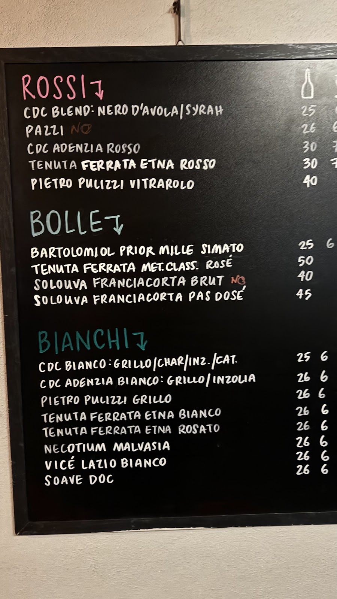
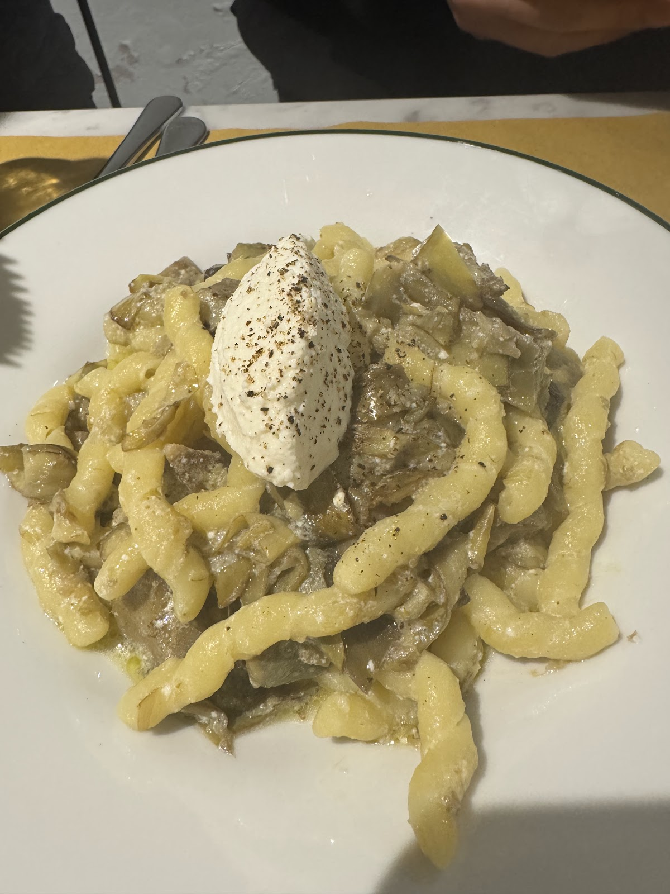
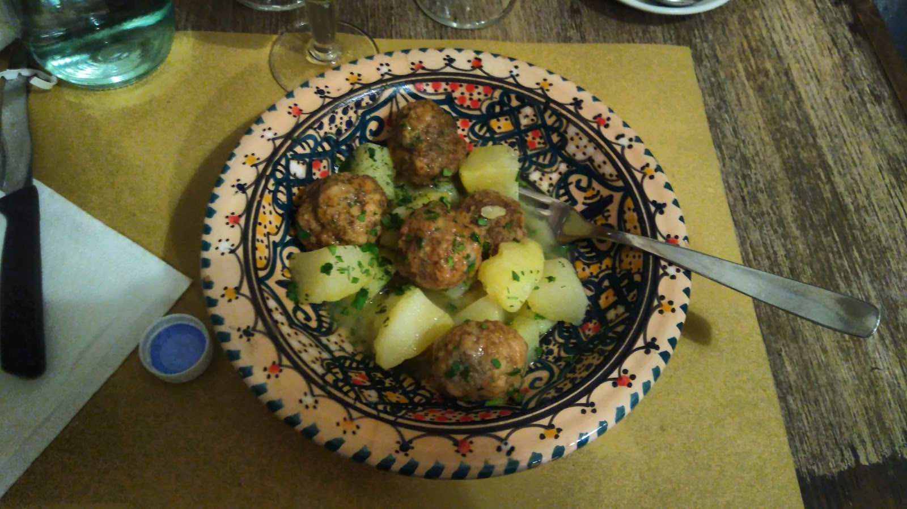
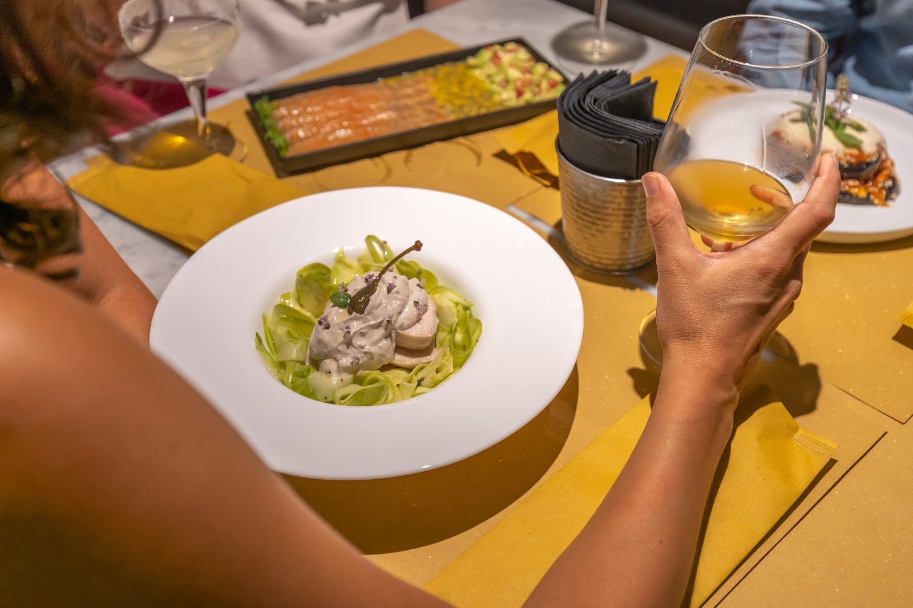
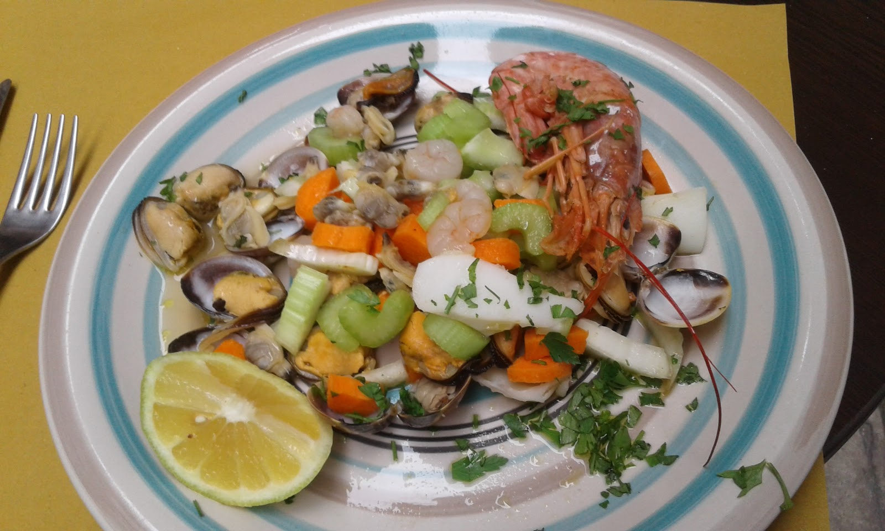
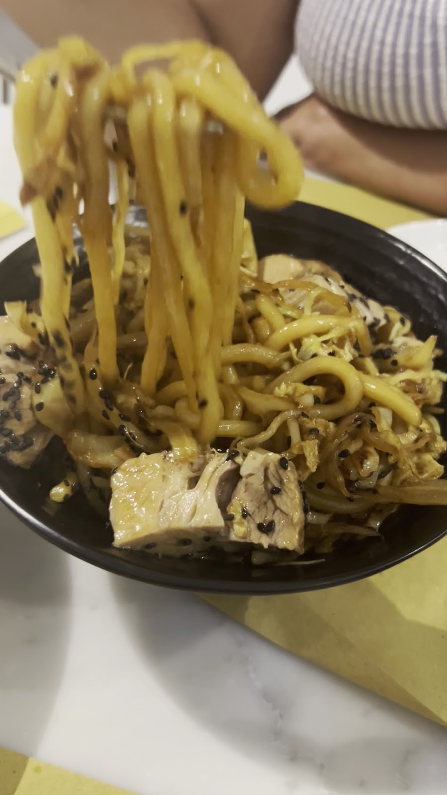

Cucina siciliana di mercato e vini scritti col gesso, nella strada dove Palermo faceva la carta. Market-driven Sicilian cooking and chalk-written wines, on the old papermakers' street.
Via dei Cartari era la strada dei mastri cartai. Noi la carta la mettiamo ancora in tavola — quella gialla, da bottega — e il menù lo scriviamo col gesso: la lavagna cambia con il mercato di Palermo, ogni giorno.
Via dei Cartari was the papermakers' street. We still lay paper on the table — the yellow butcher kind — and write the menu in chalk: the board follows Palermo's markets, every day.
Piatti semplici e rifiniti, pasta fresca, pescato e verdure di stagione. E una cantina che parla siciliano: Etna, Nero d'Avola, bolle artigianali.

Bottiglie reali dalla nostra lavagna — la lista gira spesso, il gesso si cancella. Real bottles from our board — it turns often, chalk erases.
quasi tutto anche al calice, 6–7 € — most by the glass too
Il menù non è stampato: sta sulla lavagna e segue le stagioni — antipasti, pasta fresca, pescato e carni del giorno. I prezzi li trovate scritti accanto, col gesso.
The menu isn't printed: it lives on the board and follows the seasons — the day's prices are chalked right beside each dish.

Busiate al torchio, carciofi e ricotta al pepe nero — quando il mercato le porta.

Polpettine in umido con patate, servite nella ceramica siciliana.

Ogni piatto ha il suo vino: il servizio ve lo racconta e ci prende sempre.


crudo di mare, pasta al torchio, carta gialla sotto — the yellow paper underneath, always
"Best meal in Palermo! Food was refined yet simple, and the wine recommendations were spot on."
"Local Sicilian food cooked fresh. The menu board is filled with tasty seasonal options."
"We walked by and thought it looked quite perfect! Pasta dishes were EXCELLENT — wine from Etna, icing on the cake."
★ 4,7 / 5 — 424 recensioni su Google
| Lunedì – MercoledìMon – Wed | 18:00 – 24:00 |
| GiovedìThursday | 19:00 – 24:00 |
| Venerdì – SabatoFri – Sat | 19:00 – 01:00 |
| DomenicaSunday | Chiuso · Closed |
Via dei Cartari 1, 90133 Palermo — a due passi dal Cassaro e dalla Cala
Siamo piccoli: un messaggio su WhatsApp e il tavolo è vostro. We're small — one WhatsApp message and the table is yours.
💬 WhatsApp 📞 348 743 0818 Apri in Maps